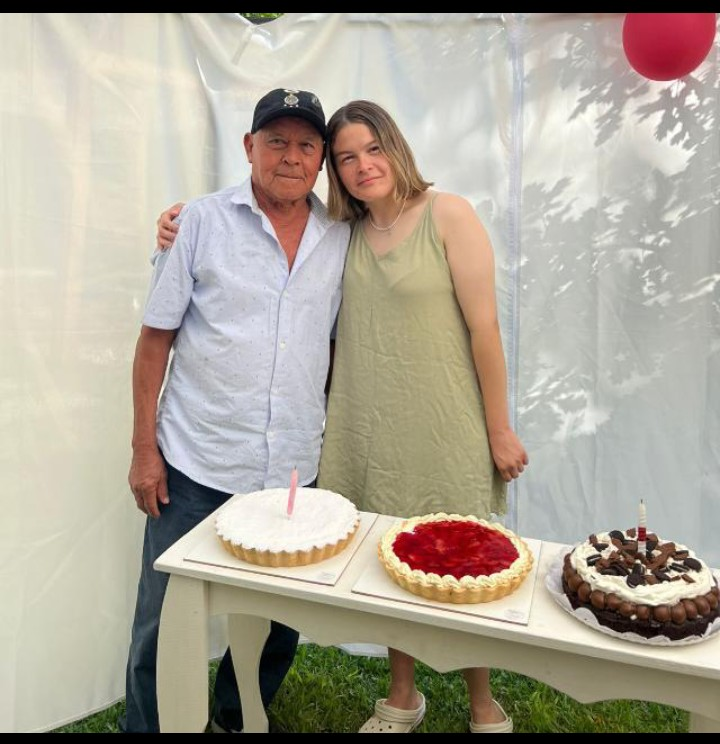
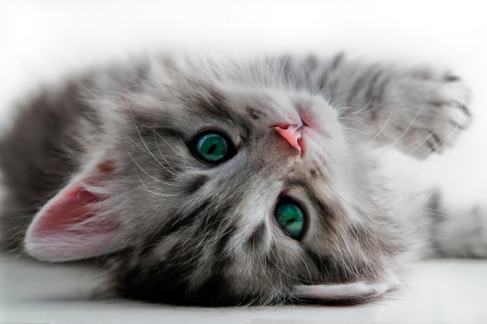

me llamo Ludmila Gomez , tengo 23 años. naci en Argentina , pero me crie en Paraguay.

algo curioso sobre mi:
disfruto mas la compañia de los animales que de la gente

aqui compartire mis pensamientos y temas que me interesan.
para empezar, les cuento que hasta ahora el curso de programacion me parece una clase muy interesante y disfruto aprendiendo algo nuevo, aunque definitivamente no es para mi.